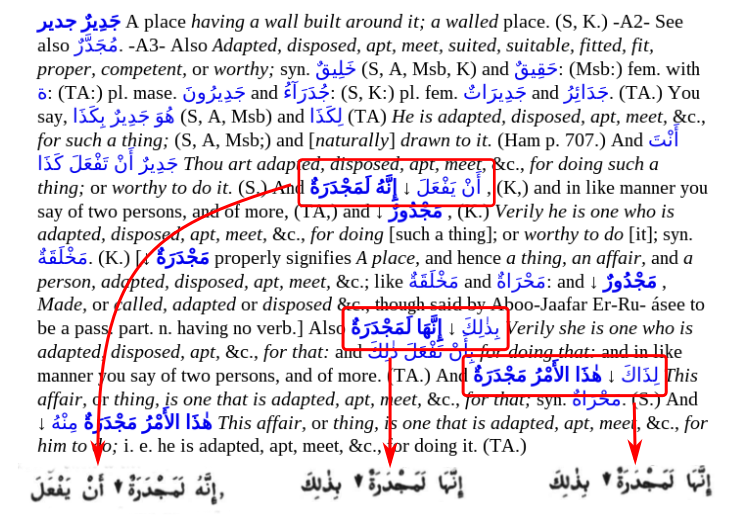
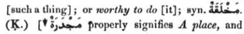
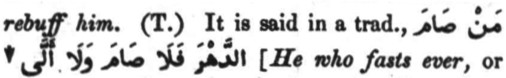

The problem
Consider the following image taken from Perseus (External link) in which the highlighted text is associated with the text as it appears in Lane (in this case Volume 2, page 390).

One description of this problem would be: whenever Arabic text precedes a cross-reference, the two blocks of text either side of ↓ are reversed. The correct word order can be recovered by flipping them around.
(To view this example search for node 5217.)
Unfortunately it is not that simple.
It is said in a trad., <foreign lang="ar" TEIform="foreign">mano SaA
ma</foreign> <lb/> ↓
<orth type="arrow" lang="ar">Ald~ahora falaA SaAma walaA A^al~aY</orth>
To understand the difficulty we need to look at the details of the markup applied to the original text during digitization.
First, a simple piece of Arabic text in this excerpt from the same entry to show the two structures involved:

The Arabic text is transliterated (see here for details) and wrapped in XML tags:
syn. <foreign lang="ar">maxolaqapN</foreign>. (K.) [↓
<orth type="arrow" lang="ar">majodarapN</orth> properly signifies
Standalone Arabic text is wrapped in <foreign> tags; Arabic text in a cross-reference in <orth> tags.
Now consider the first example highlighted above,
And <foreign lang="ar">A^ano yafoEala</foreign> ↓
<orth type="arrow">A_in~ahu lamajodarapN</orth>, (K,) and in like manner
Note the structure: a <foreign> tag and an <orth> either side of ↓.
However, consider the following example from Volume 1, Page 84 (column 2 line 10): :

This becomes:
It is said in a trad., <foreign>mano SaAma</foreign> ↓
<orth type="arrow">Ald~ahora falaA SaAma walaA A^al~aY</orth>
and is rendered correctly by Perseus.
(To view this example search for node 1126.)
Note that it has the same structure as the earlier example which was not rendered correctly: a <foreign> and an <orth> tag either side of ↓. This example happens to be correct because the line-break in the text "changes" the word order.
The fix
Within the XML that makes up the entire lexicon there are 3577 instances of the sequence <foreign> ↓ <orth>. Since it seems likely that a relatively small number of these instances would happen to fall on line-breaks, the current software "fixes" the XML as it is imported into the database and leaves a means to correct those that remain "broken". It is hoped that using this method will fix many more entries than it breaks.
The method is to insert a <lb/> between the <foreign> and the <orth>. Using the above example:
It is said in a trad., <foreign lang="ar" TEIform="foreign">mano SaA
ma</foreign> <lb/> ↓
<orth type="arrow" lang="ar">Ald~ahora falaA SaAma walaA A^al~aY</orth>
The fix has to be applied to the XML and then processed and loaded into the database using the provided script. So for example, the above entry (n1226) occurs in the file _A0.xml:
perl orths.pl --db lexicon.sqlite --node n1126 --perseus ../xml/_A0.xml